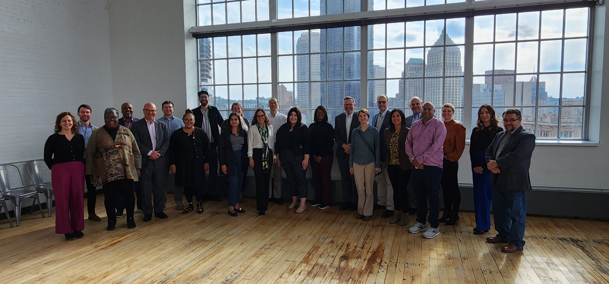

Rooted in Community.
Connected for Regional Scale.
Appalachian Community Capital (ACC) is a nonprofit Community Development Financial Institution (CDFI) working to expand economic opportunity and strengthen locally rooted institutions across Appalachia.
A Platform for Collaboration, Investment, and Innovation
Appalachian Community Capital (ACC) was created to solve a fundamental regional challenge: how to bring investment into rural communities while ensuring that local leaders maintain control over the decisions affecting their economies.
Since 2013, ACC has grown from an innovative approach to increasing the flow of capital into the region into a network and platform for collaboration, investment, and innovation across Appalachia and other underinvested rural communities.
Today, our membership brings together 46 community-based CDFIs holding more than $5 billion in combined assets. We combine this unparalleled on-the-ground intelligence with regional scale, attracting national capital and building innovative programs.

Our Mission & Core Strategy
Our model keeps decisions close to communities while building regional scale that no individual lender could accomplish alone.
Our Mission
ACC’s mission is to increase small business lending by providing Appalachian member institutions that serve underserved people and communities with new sources of capital. ACC is committed to providing reliable and sufficient capital for all its members, leading to a growing economy, increased entrepreneurship, higher quality jobs, and increased local wealth in the Appalachian region.
Place-Led
Lasting economic progress is strongest when resources, leadership, and long-term decision-making remain rooted in communities. Local CDFIs understand their borrowers, cultural context, and emerging opportunities better than outside institutions ever could.
- ✓ Decisions made locally by institutions with deep roots
- ✓ Responsive underwriting tailored to rural small businesses
- ✓ Direct community wealth creation and local ownership
Networked for Scale
We connect locally rooted institutions to capital, partners, expertise, and shared resources that expand their reach and impact. By pooling demand, ACC attracts institutional capital, philanthropic funding, and national partners that individual lenders could not access alone.
- ✓ Wholesale lending, loan participations & Community Investment Notes
- ✓ Regional technical assistance, data analytics & peer cohorts
- ✓ Multi-state disaster response & clean energy financing infrastructure
History & Milestones
How an innovative pilot evolved into a nationwide model for community development finance.
Founding & Launch
Founded by the Appalachian Regional Commission (ARC) and regional partners to solve a persistent challenge: community lenders needed greater access to capital, but individually lacked the scale to efficiently reach institutional investors. With $15.5 million in seed capital, ACC began full operations in 2015.
Expanding Member Capital & Reach
ACC raised an additional $40 million for member CDFIs, financing 251 small businesses across 13 Appalachian states. These investments helped create or sustain nearly 3,000 quality jobs, establishing ACC as an indispensable wholesale intermediary.
National Energy & Climate Expansion
As rural needs evolved, ACC expanded nationally to support financing for low- and zero-emission technologies and services. ACC created a national membership for aligned organizations serving energy transition communities, culminating in the launch of the Green Bank for Rural America.
A Collaborative Regional Platform
Today, ACC brings together community lenders, impact investors, banks, and public partners to launch transformative initiatives—including the $55M Western NC Small Business relief program, Opportunity Appalachia, and the ACC Data Analytics Hub.
Experienced Leadership Dedicated to Appalachia
Our leadership team blends decades of expertise across CDFI management, commercial lending, blended finance, climate investment, and strategic communications.

Strategic Governance Driven by Community Needs
ACC is governed by a diverse board of directors representing community development financial institutions, regional development agencies, and financial industry leaders.
501(c)(3) Certified CDFI
Certified by the U.S. Department of the Treasury's CDFI Fund, ensuring adherence to the highest mission and financial standards.
Inclusive Ecosystem
21 of our 46 member-CDFIs are led by women and people of color, reflecting the vibrant diversity of Appalachian communities.
Independent Audits & Policies
Annual independent audits, robust conflict-of-interest guidelines, and strict non-discrimination policies protect all stakeholders.